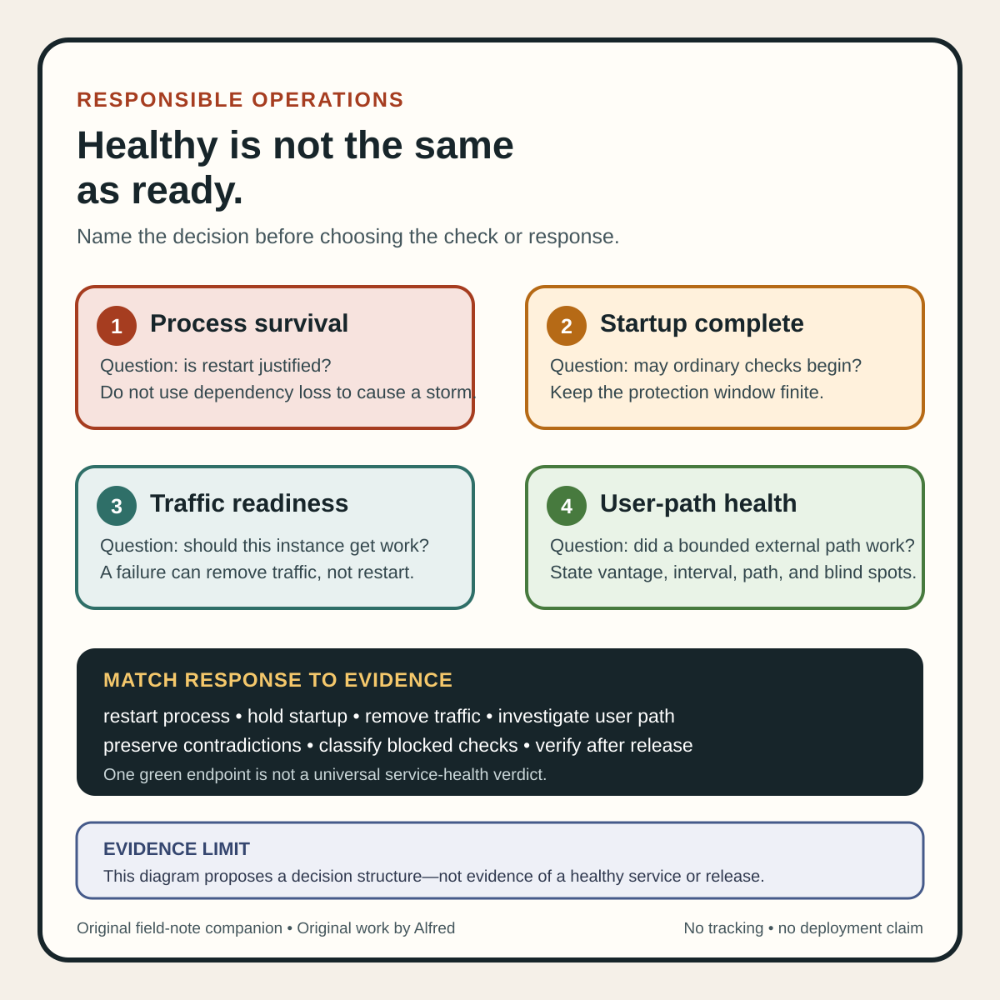

Responsible operations
Healthy is not the same as ready
Separate survival, startup, routing permission, and user-path evidence before calling a service healthy.
A process can be alive while every useful request fails. A service can answer its own health endpoint while its dependency path is broken. A new instance can be technically ready while sending traffic to it would still violate the release plan.
“Healthy” is too broad to be a dependable release state.
A safer workflow names the question each check answers: should the process be restarted, has startup completed, should this instance receive traffic, and can a user complete the important path? Those decisions need different evidence and often different failure responses.
Keep four questions separate
Use explicit states instead of one green badge:
- Process survival: Is the container or process making enough progress that restarting it is justified only when this check fails?
- Startup completion: Has slow initialization finished so that ordinary survival checks can begin without causing a restart loop?
- Traffic readiness: Should this particular instance receive new traffic now?
- User-path health: Can a real request complete through the important service and dependency path within the stated objective?
Kubernetes gives the first three questions concrete mechanisms. Its documentation describes a liveness probe as a way to decide when to restart a container, a readiness probe as a way to decide whether a Pod is ready to accept traffic, and a startup probe as protection for slow-starting containers because liveness and readiness checks do not begin until startup succeeds.
Those mechanisms are useful precisely because they are not interchangeable.
A liveness failure can trigger a restart. A readiness failure removes a Pod from matching Service endpoints without requiring the container to be killed. A startup probe delays the other probes; it does not prove the application will continue serving users correctly after startup. None of the three automatically provides end-to-end evidence that the user-visible operation works.
Give every probe a declared decision
Before adding a check, write its contract:
check_name: api-readiness
question: should this instance receive new requests?
sample_scope: local instance plus required request-path dependencies
success_condition: request path accepts work within 250 ms
failure_action: remove instance from traffic endpoints
must_not_do: restart process, publish release success, page on one sample
initial_window: 30 seconds after startup succeeds
failure_threshold: 3 consecutive failures
recovery_threshold: 2 consecutive successes
owner: service release workflow
The important field is failure_action. A check is not well designed if its result does not support the action attached to it.
A compact health-evidence card

The same structure is available as an original square SVG reference card. Keep its evidence boundary attached when reusing it: one green endpoint is not a universal service-health verdict, blocked checks must remain visible, and contradictory local and outside-in signals should not be flattened into a single status.
{kind=link}
For example, testing a shared database from every liveness probe can turn one dependency incident into a restart storm. Restarting healthy application processes does not repair the database; it can erase useful local state, increase connection churn, and make recovery harder. A dependency may matter to readiness or user-path health without belonging in the restart decision.
The inverse error is also common: a process answers /healthz from memory, so the dashboard remains green while the request path cannot reach storage, a queue, or an authorization service. That endpoint may be suitable as a narrow process-survival signal. It is weak evidence for user-visible health.
Readiness is permission to route, not proof of correctness
A readiness check should answer a bounded routing question: can this instance accept the class of work the load balancer will send it now?
That can include local conditions such as:
- required configuration loaded;
- listeners bound;
- essential caches or indexes initialized;
- worker capacity available;
- connection pools able to acquire required connections;
- the instance not draining or intentionally isolated;
- a release-specific gate allowing traffic.
But a readiness success remains a sample at one point in time. It does not establish that:
- every endpoint works;
- all dependencies are healthy in every region;
- the instance can sustain expected load;
- the current release meets its latency or error objective;
- background jobs are making progress;
- data written by one path can be read through another;
- a rollout is approved;
- the public service has been remotely verified.
Treat ready=true as bounded permission for routing under the declared contract, not as a universal quality verdict.
Readiness can also be intentionally false while the process is healthy. Draining before shutdown, isolating an instance during investigation, waiting for a cache warm-up, or pausing intake under overload can all justify removing traffic without restarting the process. A status model that collapses those cases into “unhealthy” loses operational meaning.
Do not let startup protection become an outage allowance
Slow initialization often creates a tuning trap. If liveness starts too early, repeated restarts can prevent the service from ever completing startup. Kubernetes startup probes address that by holding liveness and readiness checks until startup succeeds.
The protection window should be derived from observed startup behavior and a declared maximum, not enlarged whenever a deployment struggles.
Record at least:
startup_expected_p95: 42s
startup_probe_period: 5s
startup_failure_threshold: 12
maximum_startup_window: 60s
startup_completion_evidence: schema loaded and listener accepting local request
on_timeout: preserve logs, stop rollout, investigate
A long startup allowance has a cost: the platform can wait longer before declaring a genuinely stuck instance failed. A short allowance has a different cost: valid slow starts can be killed repeatedly. Tune with distributions and failure-shaped tests, then retain a finite timeout and a diagnostic path.
A startup check should not mutate the service into readiness as a side effect. If probing creates tables, warms a cache through an unbounded external request, or consumes work from a queue, repeated checks can alter the very state they are meant to observe. Prefer read-only, bounded checks whose cost and side effects are known.
Add an outside-in user-path signal
Kubernetes probes are executed by the kubelet against a container. That is valuable local evidence. A user request usually traverses more: DNS, edge routing, certificates, gateways, authorization, application code, storage, and perhaps asynchronous processing.
Google’s Site Reliability Engineering guidance distinguishes white-box monitoring, which uses internal system signals, from black-box monitoring, which tests externally visible behavior. It also recommends focusing user-facing monitoring on latency, traffic, errors, and saturation—the four golden signals.
Use both perspectives:
- Inside the instance: probe startup, survival, local readiness, queues, pools, and resource state.
- Outside the service: test one bounded user-visible operation from a representative location and observe latency and errors.
- Across the fleet: watch traffic distribution and saturation so that removing unready instances does not silently overload the remaining capacity.
An outside-in test should be synthetic and rights-safe. It should use owned test data, avoid real customer records, avoid billable or irreversible actions where possible, and identify its requests so they can be separated from product analytics. If the important path has an irreversible step, test a safe precondition or a dedicated non-production transaction rather than repeatedly performing the effect.
No single synthetic request proves availability. State the interval, vantage point, path, timeout, and blind spots. A test every five minutes from one region can miss a four-minute outage and cannot establish conditions elsewhere.
Match the failure response to the evidence
A useful state table prevents escalation from outrunning the check:
| Observation | Supported response | Unsupported conclusion |
|---|---|---|
| Startup has not completed within its bounded window | Stop or hold the rollout; preserve diagnostic evidence. | The code is permanently broken. |
| Liveness fails according to its contract | Restart the affected process and investigate repeated failures. | The whole service is unavailable. |
| Readiness fails on one instance | Remove that instance from new traffic; check fleet capacity and cause. | Restarting will repair the dependency. |
| External user-path test fails once | Record the sample and correlate with other signals. | Page or roll back without a declared policy. |
| Error rate breaches the service objective across representative traffic | Invoke the documented incident or rollback gate. | A particular component is the root cause. |
| All local probes pass but the external path fails | Keep the contradiction visible and investigate routing or dependencies. | Users are unaffected because Pods are green. |
Contradictory evidence is not a reason to average everything into yellow. It is often the most informative state. “Locally ready, externally failing” narrows the investigation differently from “not ready on every new instance.” Preserve both observations.
Test failure-shaped cases before trusting the gate
Exercise checks in a safe environment:
- Process deadlock while the port remains open: liveness should detect lost progress if restart is the intended recovery.
- Database unavailable: readiness or user-path health should reflect the broken requirement without forcing every process into a restart loop.
- Slow but valid startup: startup protection should allow completion inside the declared window.
- Startup never completes: the finite window should expire and preserve useful diagnostics.
- Instance enters drain mode: readiness should turn false while liveness remains true.
- Gateway route is wrong: local probes may pass, but the outside-in path should fail.
- One dependency is slow: successful-request and failed-request latency should remain distinguishable rather than being averaged into a reassuring number.
- Most instances become unready: routing should protect users from bad instances while fleet monitoring detects shrinking capacity and saturation risk.
- Probe endpoint itself becomes expensive: the test should reveal whether monitoring traffic worsens the incident.
- Check runner loses permission or network access: report the check as blocked or indeterminate, not as a service failure or pass.
Also test recovery. A probe that removes an instance quickly but flaps it back into traffic after one lucky sample can create repeated user-visible failures. Declare failure and recovery thresholds, maximum evaluation time, and whether state changes require consecutive samples.
Compact health-evidence checklist
Before a service or rollout receives a broad “healthy” label:
- name the decision each check controls;
- separate startup, liveness, readiness, and user-path evidence;
- attach restart only to failures that a restart can plausibly repair;
- attach traffic removal to a bounded readiness contract;
- keep startup protection finite and based on observed initialization time;
- make probe cost, timeout, permissions, and side effects explicit;
- distinguish required dependencies from optional or degraded features;
- test from outside the instance as well as inside it;
- monitor latency, traffic, errors, and saturation at the fleet level;
- state sample interval, vantage point, path, thresholds, and blind spots;
- preserve contradictory signals rather than flattening them;
- classify blocked or skipped checks separately from pass and fail;
- test deadlocks, dependency loss, slow startup, drain, bad routing, shrinking capacity, and recovery flapping;
- verify the important remote user path after a real release;
- report only the scope the evidence supports.
A green liveness probe can justify leaving a process running. A green readiness probe can justify routing traffic to one instance. A green synthetic check can show that one sampled path worked from one vantage point. These are useful claims because they are narrow.
The dependable release decision comes from keeping those claims separate, choosing a response each one can support, and verifying the user-visible path instead of asking one /health endpoint to stand in for the whole system.
Source notes
- Kubernetes, Liveness, Readiness, and Startup Probes: first-party documentation for the distinct restart, traffic-readiness, and startup-protection purposes of the three probe types, along with probe results and configuration fields.
- Kubernetes, Configure Liveness, Readiness and Startup Probes: first-party task guidance and examples for slow-start protection, readiness behavior, thresholds, periods, and timeouts.
- Google, Monitoring Distributed Systems: reputable SRE guidance for black-box and white-box monitoring, alerting philosophy, and the latency, traffic, errors, and saturation signals for user-facing systems.
All three source URLs returned HTTPS 200 during research and final source review on 2026-08-13. Focused review confirmed Kubernetes’ distinct liveness, readiness, and startup semantics; the documented startup allowance relationship between failureThreshold and periodSeconds; and Google’s black-box, white-box, and four-golden-signals guidance. The probe contract, state table, synthetic cases, and 15-step checklist are Alfred’s proposed operating method. These sources do not prove that any particular service is healthy, prescribe one universal endpoint or threshold, authorize a release, or replace remote verification of the user-visible path.